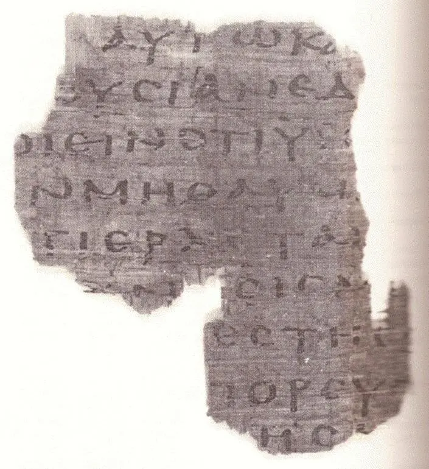

第5章

本章尚未標示字型，請稍後再來看。
在畢士大池邊治病
1這事以後，到了猶太人的一個節期，耶穌就上耶路撒冷去。2在耶路撒冷，靠近羊有一個池子，希伯來話叫作畢士大，有五個廊子；3裏面躺著瞎眼的、瘸腿的、血氣枯乾的許多病人。（有古卷加：等候水動；4因為有天使按時下池子攪動那水，水動之後，誰先下去，無論害甚麼病就痊癒了。）5在那裏有一個人，病了三十八年。6耶穌看見他躺著，知道他病了許久，就問他說：「你要痊癒嗎？」7病人回答說：「先生，水動的時候，沒有人把我放在池子裏；我正去的時候，就有別人比我先下去。」8耶穌對他說：「起來，拿你的褥子走吧！」9那人立刻痊癒，就拿起褥子來走了。
10那天是安息日，所以猶太人對那醫好的人說：「今天是安息日，你拿褥子是不可的。」11他卻回答說：「那使我痊癒的，對我說：『拿你的褥子走吧。』」12他們問他說：「對你說『拿褥子走』的是甚麼人？」13那醫好的人不知道是誰；因為那裏的人多，耶穌已經躲開了。14後來耶穌在殿裏遇見他，對他說：「你已經痊癒了，不要再犯罪，恐怕你遭遇的更加利害。」15那人就去告訴猶太人，使他痊癒的是耶穌。16所以猶太人逼迫耶穌，因為他在安息日做了這事。17耶穌就對他們說：「我父做事直到如今，我也做事。」18所以猶太人越發想要殺他；因他不但犯了安息日，並且稱神為他的父，將自己和神當作平等。
子的權柄
19耶穌對他們說：「我實實在在地告訴你們，子憑著自己不能做甚麼，惟有看見父所做的，子才能做；父所做的事，子也照樣做。20父愛子，將自己所做的一切事指給他看，還要將比這更大的事指給他看，叫你們希奇。21父怎樣叫死人起來，使他們活著，子也照樣隨自己的意思使人活著。22父不審判甚麼人，乃將審判的事全交與子，23叫人都尊敬子如同尊敬父一樣。不尊敬子的，就是不尊敬差子來的父。24我實實在在地告訴你們，那聽我話、又信差我來者的，就有永生；不至於定罪，是已經出死入生了。25我實實在在地告訴你們，時候將到，現在就是了，死人要聽見神兒子的聲音，聽見的人就要活了。26因為父怎樣在自己有生命，就賜給他兒子也照樣在自己有生命，27並且因為他是人子，就賜給他行審判的權柄。28你們不要把這事看作希奇。時候要到，凡在墳墓裏的，都要聽見他的聲音，就出來：29行善的，復活得生；作惡的，復活定罪。
30「我憑著自己不能做甚麼，我怎麼聽見就怎麼審判。我的審判也是公平的；因為我不求自己的意思，只求那差我來者的意思。」
為耶穌作證
31「我若為自己作見證，我的見證就不真。32另有一位給我作見證，我也知道他給我作的見證是真的。33你們曾差人到約翰那裏，他為真理作過見證。34其實，我所受的見證不是從人來的；然而，我說這些話，為要叫你們得救。35約翰是點著的明燈，你們情願暫時喜歡他的光。36但我有比約翰更大的見證；因為父交給我要我成就的事，就是我所做的事，這便見證我是父所差來的。37差我來的父也為我作過見證。你們從來沒有聽見他的聲音，也沒有看見他的形像。38你們並沒有他的道存在心裏；因為他所差來的，你們不信。39你們查考聖經（或譯：應當查考聖經），因你們以為內中有永生；給我作見證的就是這經。40然而，你們不肯到我這裏來得生命。
41「我不受從人來的榮耀。42但我知道，你們心裏沒有神的愛。43我奉我父的名來，你們並不接待我；若有別人奉自己的名來，你們倒要接待他。44你們互相受榮耀，卻不求從獨一之神來的榮耀，怎能信呢？45不要想我在父面前要告你們；有一位告你們的，就是你們所仰賴的摩西。46你們如果信摩西，也必信我，因為他有指著我寫的話。47你們若不信他的書，怎能信我的話呢？」